Nasze Karty QSL

Karty QSL wysyłane za łączności i nasłuche naszej satcji SP1PNW. Gdy nie pracujemy pod znakiem
okolicznościowym wysyłamy „zwykłe karty".
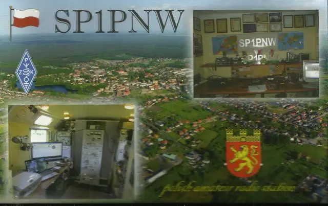
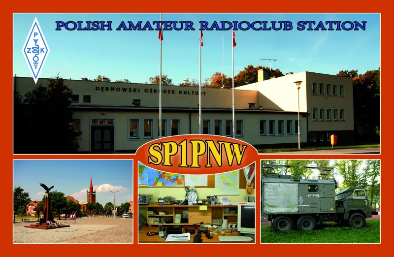
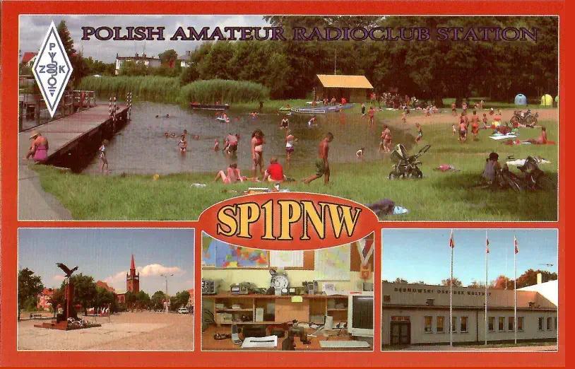
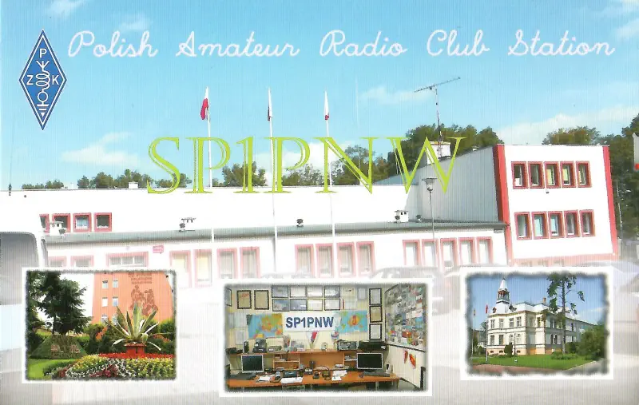

Karty QSL wysyłane za łączności i nasłuche naszej satcji SP1PNW. Gdy nie pracujemy pod znakiem
okolicznościowym wysyłamy „zwykłe karty".
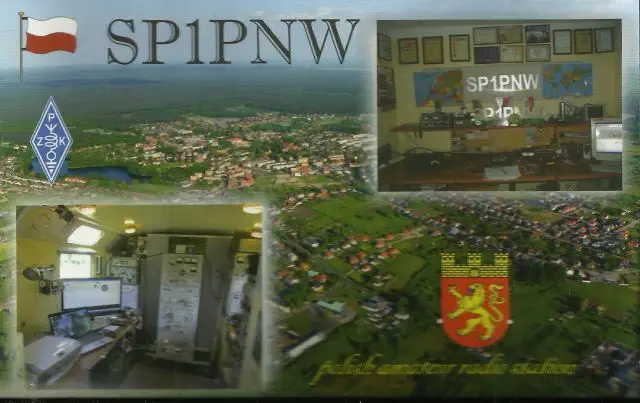
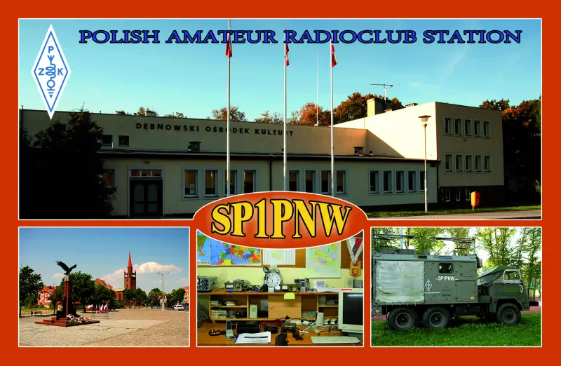
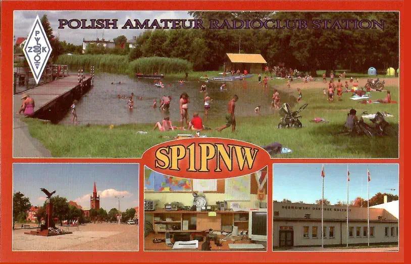
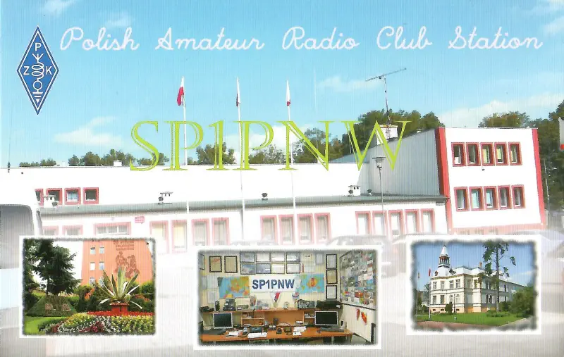
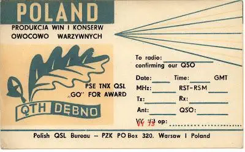 Najstarsza karta klubu SP1PNW jaką udało mi się znaleźć, sponsorem karty były ówczesna fabryka przetworów owocowych.
Karty podczas pracy pod znakiem SN0DD:

Karty podczas pracy pod znakiem SN0MD:


 Karty podczas pracy pod znakiem SN0TK:
Karty podczas pracy pod znakiem SN0TK:
Karty podczas pracy pod znakiem SN0ST:

Karty podczas pracy pod znakiem SN0LP: 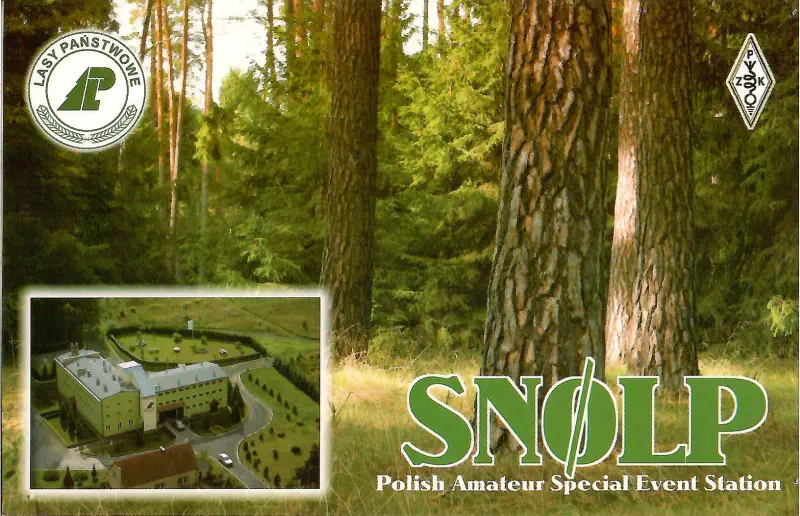
Karty podczas pracy pod z Trzcińsko Zdrój: 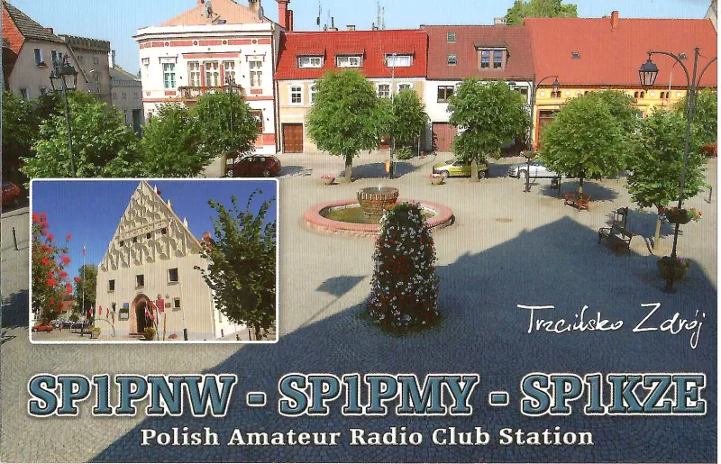
Karty podczas pracy pod znakiem SN0BPS:
 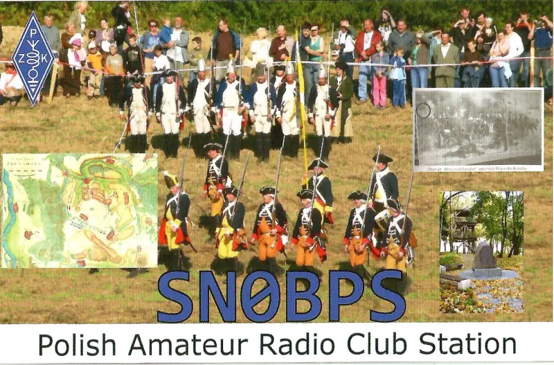
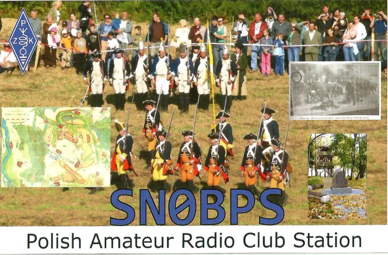
Karty podczas pracy pod z Trzcińsko Zdrój:
Karty podczas pracy 50 lat krótkofalarstwa w Dębnie:
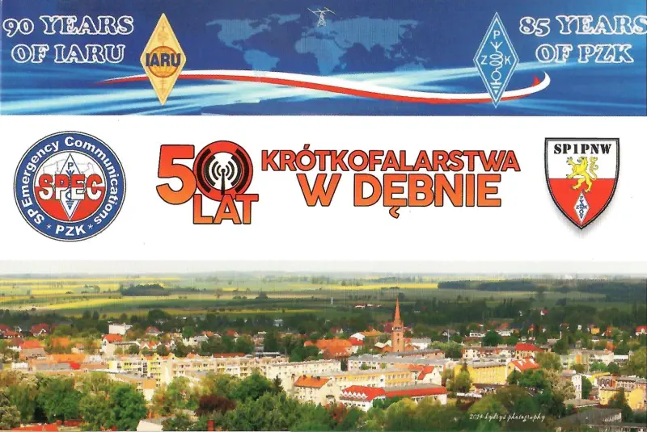
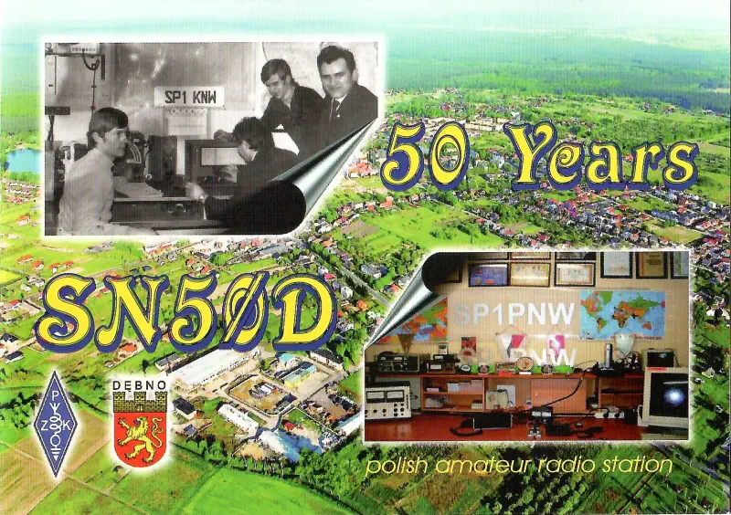